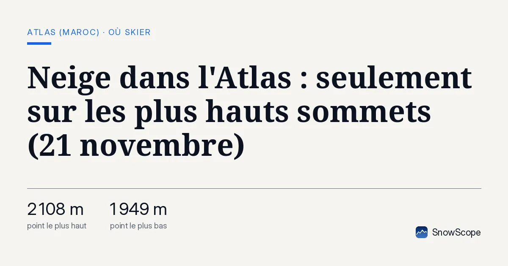
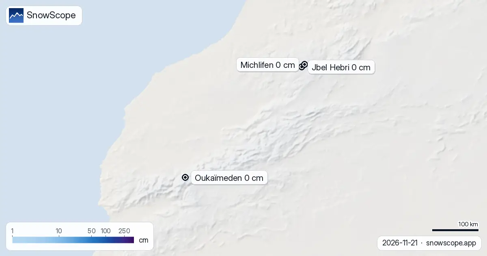
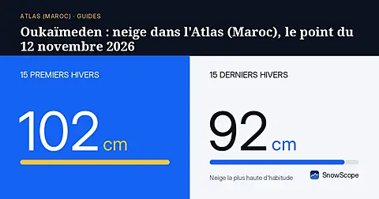

Neige dans l'Atlas : seulement sur les plus hauts sommets (21 novembre)
Les pistes de l'Atlas restent à nu le 21 novembre. SnowScope montre 1 cm seulement aux points les plus élevés, répartis sur environ 0 km² de terrain. Dans ces montagnes sèches, la neige arrive par vagues ; la première vraie chute peut encore être éloignée de plusieurs semaines.
Consultez les prévisions neige en temps réel pour Jbel Hebri sur l'application SnowScopeHauteurs de neige, alertes poudreuse et carte 3D, gratuitement.
Trois stations, trois pentes nues
Jbel Hebri n'a pas de neige sur ses pentes supérieures. Michlifen, plus bas à 1 870 m, est tout aussi sec. Oukaïmeden, la plus haute des trois à 3 258 m, ne montre pas non plus de couverture sur les pistes aujourd'hui.
La carte a rétréci depuis le 19 novembre, quand 10 km² de terrain étaient blancs. Aujourd'hui ce chiffre est 0 km². La neige tombée plus tôt cette semaine a fondu jusqu'aux plus hautes crêtes, au-dessus de ce que tout skieur peut atteindre par remontée.
| Station | Hauteur de neige | Neige fraîche, 72 h | Attendu, jours suivants | Sommet |
|---|---|---|---|---|
| Jbel Hebri | 0 cm | 0 cm | 0 cm | 2 108 m |
| Michlifen | 0 cm | 0 cm | 0 cm | 2 070 m |
| Oukaïmeden | 0 cm | 0 cm | 0 cm | 3 258 m |

Pourquoi l'altitude compte ici
Le niveau de congélation le 21 novembre se situe entre 4 160 m et 4 380 m à Jbel Hebri. Cela signifie que la pluie ou la neige mouillée tombera sur chaque pente que la station peut proposer. Même la neige fraîche devient du slush en quelques heures après sa chute.
Oukaïmeden se situe au plus haut, avec son sommet à 3 258 m. Quand une vraie tempête arrive, cette altitude supplémentaire lui donne la première chance de conserver de la neige sèche. Jbel Hebri (2 108 m) et Michlifen (2 070 m) doivent attendre un système beaucoup plus froid pour devenir blancs.
Ce que montre la prévision
Entre maintenant et le 24 novembre, aucune neige fraîche n'est prévue pour aucune station. La carte prévoit que 0 km² de couverture neigeuse subsisteront tout le week-end et jusqu'à lundi.
C'est le schéma de l'Atlas : de longs périodes sèches entrecoupées de brèves tempêtes intenses. La prochaine chute importante peut arriver à tout moment, mais elle n'est pas encore visible. Quand elle arrive, surveillez la carte SnowScope pour Oukaïmeden d'abord ; son altitude lui donne l'avantage.
Comment cette semaine se compare
Selon les chiffres des hivers passés, ce n'est pas inhabituel. À 2 028 m près de Jbel Hebri, la profondeur moyenne à cette date sur 46 hivers passés était 0 cm. À 2 929 m près des stations intermédiaires d'Oukaïmeden, la normale est 2 cm. En ce moment, la neige réelle est plus profonde qu'elle ne l'était dans 23 de ces 46 hivers—une avance minime, mais pas un échec.
La saison sèche au début de l'année est réelle. Ces stations ne deviennent blanches de manière fiable qu'en décembre, et souvent pas totalement avant la nouvelle année. La patience fait partie du jeu ici.
Sur le terrain : ce que la carte omet
1 centimètre au point le plus élevé raconte une partie de l'histoire. La carte voit des plaques blanches d'en haut ; vos skis vous diront s'il y a assez pour skier. La neige de début de saison repose souvent sur l'herbe et les roches exposées. La couverture mince que vous voyez sur l'appli peut cacher rien en dessous—ou elle peut ne rien être du tout.
Le travail sur le terrain dans ces montagnes enseigne l'humilité : la carte SnowScope est un outil, pas une promesse. Elle montre la meilleure estimation de ce qui s'y trouve. Seule la pente elle-même, le jour de votre arrivée, peut vous dire ce que vos skis trouveront.
Que faire ensuite
Si vous prévoyez une visite à l'Atlas, ne vous précipitez pas. Vérifiez à nouveau la prévision 48 heures avant de partir ; dans cette région, une tempête peut arriver soudainement et tout changer en deux jours.
Définissez une alerte poudreuse dans l'appli SnowScope pour Oukaïmeden. Quand un système se déplace avec de l'air froid en altitude, cette station montrera de la neige fraîche en premier. Les deux autres suivront, mais seulement si la tempête est assez froide pour atteindre leurs sommets plus bas.
Conseils aux skieurs
- La neige de début de saison est mince et peut masquer des rochers et de l'herbe : restez uniquement sur les pistes ouvertes et balisées jusqu'à ce que l'épaisseur augmente.
- Les prévisions trois à cinq jours à l'avance changent souvent à l'Atlas : vérifiez à nouveau la carte 24 heures avant de partir.
- Pas de neige sur la carte ne signifie pas que la station est fermée—mais vérifiez le site web de la station pour le statut des remontées et les dates d'ouverture avant de réserver un voyage.
- Définissez une alerte poudreuse pour Oukaïmeden : quand la prochaine tempête arrive avec de l'air froid, elle atteindra cette altitude en premier en raison de son sommet à 3 258 m.
- Apportez des couches : le niveau de congélation est bien au-dessus de tous les sommets des trois stations en ce moment, donc toute pluie ou neige mouillée sera humide et lourde si vous êtes pris dedans.
À propos de ces chiffres
Les hauteurs de neige des stations sont la neige la plus épaisse sur le haut du domaine à la date indiquée ; ce sont des estimations pour une zone, pas une mesure en un point. Les prévisions peuvent changer. Consultez toujours le bulletin d'avalanche officiel avant le hors-piste.
Citer ce bulletin
Pour la recherche, l'enseignement ou la presse : chiffres et graphiques réutilisables librement sous CC BY 4.0 avec cette citation.
SnowScope (2026), Neige dans l'Atlas : seulement sur les plus hauts sommets (21 novembre), https://snowscope.app/blog/fr/2026/11/atlas-morocco-atlas-snow-check-21-november-2026.html, consulté le 2026-11-21
SnowScope (Atlas Labs). (2026, November 21). Neige dans l'Atlas : seulement sur les plus hauts sommets (21 novembre). SnowScope snow reports. https://snowscope.app/blog/fr/2026/11/atlas-morocco-atlas-snow-check-21-november-2026.html
BibTeX
@misc{snowscope2026atlasmoroccoatlassnowche,
author = {{SnowScope (Atlas Labs)}},
title = {Neige dans l'Atlas : seulement sur les plus hauts sommets (21 novembre)},
year = {2026},
month = nov,
howpublished = {\url{https://snowscope.app/blog/fr/2026/11/atlas-morocco-atlas-snow-check-21-november-2026.html}},
note = {Published 2026-11-21 13:04 UTC; accessed 2026-11-21}
}· CC BY 4.0 · Méthodes, données et outils →
Jbel Hebri : neige et température selon l'altitude, cet hiver vs l'hiver dernier (outils) →
Suivre Jbel Hebri
Gratuit : un message quand la neige arrive, et la météo chaque matin.
Autres bulletins neige

Le 15 décembre à Michlifen, 89 % des hivers sont presque sans neige. Les meilleures chances arrivent après une tempête, pas selon le calendrier. Données du 13 novembre 2026.

Décembre n'apporte que 18 cm de profondeur typique à mi-montagne à Oukaimeden, contre 53 cm en mars. Le début de saison est maigre mais possible. Données du 13 novembre 2026.

Pas encore de neige à Oukaïmeden le 12 novembre. Les pics de l'Atlas sont dénudés ; la saison hivernale atteint généralement son apogée en mars avec 58 cm au sommet.